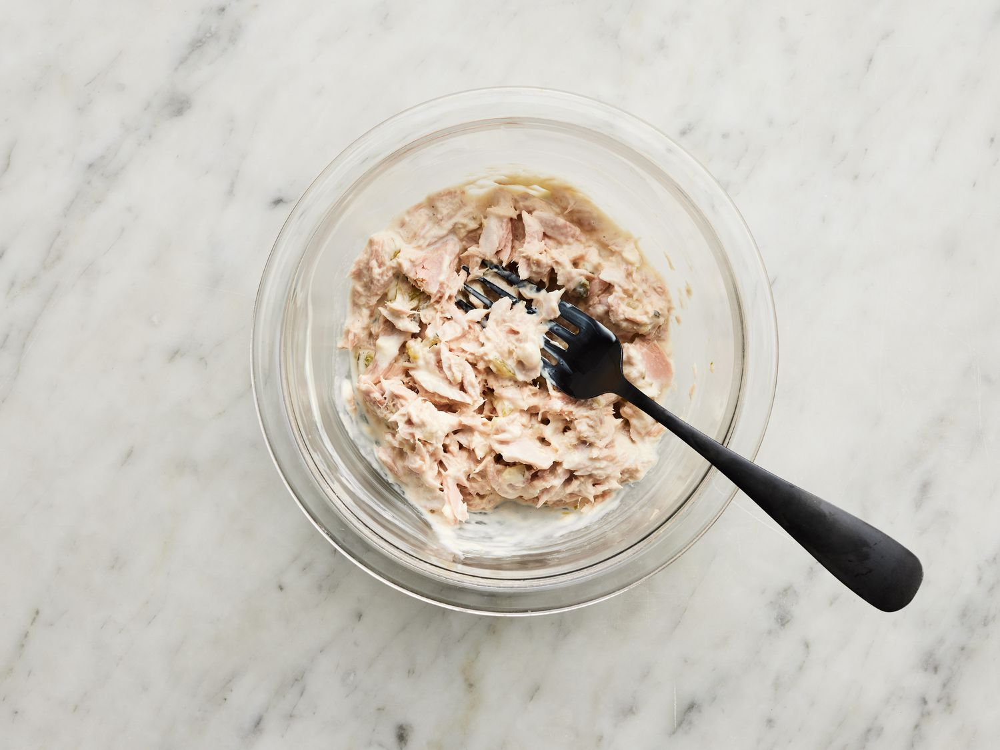

Home
Quick Tuna Salad Recipe

Description
Learn how to make tuna salad with this recipe for a great dish when you are in a hurry. It's very quick and easy to make and tastes great every time!
Ingredients
- 1 (5 ounce) can of solid white tuna packed in water, drained
- 1/4 cup of creamy salad dressing
- 1 tablespoon of sweet pickle relish, or to taste
Steps
- Gather the ingrdients
- Mash tuna together with creamy salad dressing and relish in a small bowl with a fork.
- Enjoy